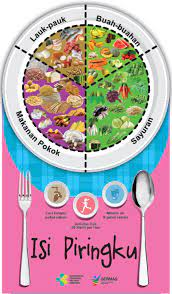

Keseimbangan makanan sehat adalah makanan yang memiliki kandungan karbohidrat, protein, lemak, dan vitamin. Asupan nutrisi untuk tubuh bisa didapat dari beragam jenis makanan sehat, tidak terbatas pada satu jenis saja.

1.Kelebihan berat badan dan lemak tubuh 2.Mengganggu hormon 3.Meningkatkan risiko terkena penyakit tidak menular 4.Dapat mengganggu fungsi otak 5.Menimbulkan rasa mual 6.Dapat menimbulkan gas berlebihan serta kembung 7.Dapat membuat Anda mengantuk